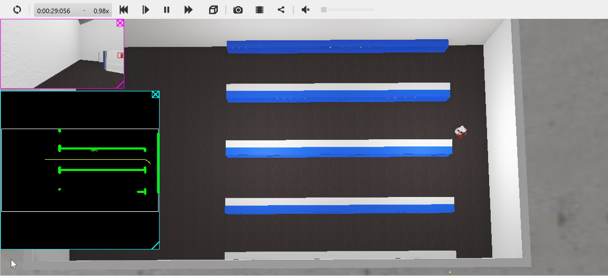
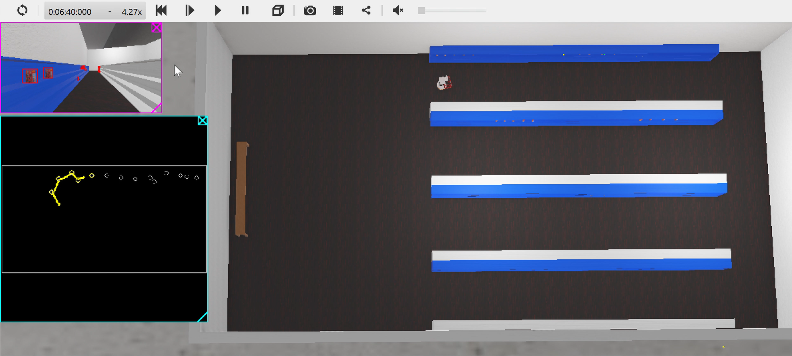

Autonomous Robot Navigation System
HomeProject Introduction
This was a school project focusing on the use of Python and multiple libraries to control an autonomous robot in a virtual environment simulated by Webots. There were many aspects of this project that needed to be completed, and within my group I handled the mapping, path planning, and localization development. After each of these steps were completed they were added to our holistic robot controller, which enabled it to autonomously navigate to and collect specified objects.
In order to enable each other to fully work on our parts of the project, we each created simple, early designs of our code that could function as stand-ins for the final products. This led to my development strategy of implementing basic solutions before starting from scratch on more sophisticated and reliable methods.
Mapping
The process of mapping for the robot involved navigating the space it was placed in, storing the positions of observed obstacles, and saving those observations while eliminating erroneous ones. The foundation of the mapping process consisted of the robot's GPS and LIDAR sensors.
The GPS system was perfect due to it receiving its position and bearing data directly from the simulation. This was provided as an easy way to develop an early mapping system, but would count for very little in the final result of the project.
The LIDAR sensor was comprised of numerous lasers facing forward in a fan pattern, which could detect the distance of an object on the same horizontal level as the sensor. Using some mathematics covered in class, the distances reported from each laser could be translated from the robot's coordinate frame to the global coordinate frame.
With obstacles represented in the global coordinate frame, their locations could be stored on one unified map. My team agreed to represent the map as a 2D arrangement of Numpy arrays with a length of 360 and a binary encoding to tell whether an obstacles was at a coordinate or not.
One problem that arose in my early mapping solution was the inclusion in the map of fake obstacles that were recorded in error. This was a result of the frame of the robot that housed the LIDAR sensor. Due to the arrangement of the robot's wheels and some physics-calculation unreliability on the part of the simulation, the robot would frequently rock in movement and lead to the LIDAR sensor occasionally observing the floor. My solution was to implement a sort of confidence metric that resulted in obstacles only being recorded if they were observed numerous times.
The two solutions created for mapping were a manually controlled system and a much more difficult to implement SLAM system. SLAM stands for Simultaneous Localization And Mapping, and uses observed waypoints to more accurately predict the robot's location. Our instructors for the course advised against developing SLAM code by hand as it tends to be extremely complicated and would take far more time to create than we had to complete the project. In order to implement a SLAM technique I found a Python library online that I could use: PythonRobotics. This library included numerous robotics-oriented code solutions, but my focus was on the FastSLAM section. Using the code from here, I managed to modify it and some of my own code to facilitate data transfer between them. The addition of the SLAM code to the project was my final work on the mapping aspect, which ended successfully.
Path Planning
Within the operating space of the robot, and given a map of the space, paths between points would need to be plotted so that the robot could autonomously navigate between them. Following my team's plan of tiered implementations, I created three path planning solutions.
First was manual pathing. This was a very basic solution that enabled my teammates to navigate the robot manually. This solution also remained useful through the end of the project as a means for debugging and as a basis for the robot's manipulator arm.
Second was RRT, short for Rapidly-exploring Random Trees. The general RRT algorithm took in a map, which at this point I had already developed, with start and end points. Branches are made from the start point until the end point is found, while ensuring that no branch collides with an obstacle. One accomodation that had to be made for this mapping solution was the creation of a configuration space. This new map would expand the size of the obstacles by the robot's maximum width, which would ensure that a path created using this map would not lead to the robot colliding with anything. The only problem with the RRT solution was that it could create very lengthy paths, and had no integrated method of optimizing paths.
Third was RRT*, a modified version of RRT that integrates the usage of heuristics from the search algorithm A*. The addition of the heuristic solved the sub-optimal path generation of RRT, and for the purposes of the project was the best solution available for path planning.
One additional aspect of my resposibility for path planning was to create path following code. I had already developed this code in a previous project for the class that utilized the same robot, so adapting it to follow a generated path was simple.
Localization
This part of the project was the simplest due to both available methods of localizing the robot's coordinates being minor efforts to complete. The first method of localization was inverse kinematics, which involves using the known dimensions of the robot and the movements of the motors to determine the robot's change in position over time. The implementation of this method was made easy by our coverage of this topic in class, which included discussion of the mathematics behind the required calculations. The second method came from the previously mentioned SLAM library, which could make simultaneous use of mapped landmarks to update the robot's estimated position.
Results
The final result of the project was successful in the tests it was put through. The primary purpose of the robot was to collect objects autonomously. In reaching towards this goal, my contributions to the code enabled the robot to autonomously map and navigate around the environment it was placed in without errors. My inclusion of the manual navigation controls also allowed for slight corrections that were necessitated by a teammate's design of the manipulator controlling code. I am very pleased with the success of the mapping and pathing designs, as they were clean and effective with visible results.